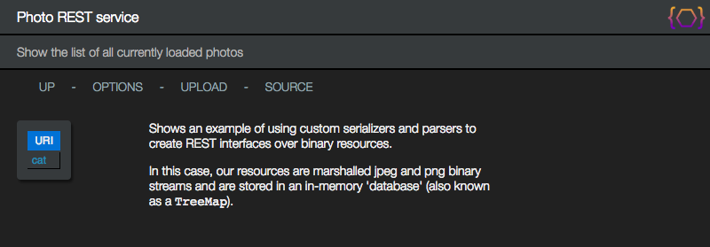

PetStore
The PetStore application is an functional application meant to demonstrate the following:
-
Creating a Juneau-based REST interface on top of JPA beans.
-
Creating sophisticated Swagger UI using only annotations.
When you click the petstore link on the home page of the examples app, you should see this page:
http://localhost:10000/petstore

The contents of this page is primarily defined via annotations defined on the PetStoreResource class:
@RestResource(
path="/petstore",
title="Petstore application",
description= {
"This is a sample server Petstore server based on the Petstore sample at Swagger.io.",
"You can find out more about Swagger at <a class='link' href='http://swagger.io'>http://swagger.io</a>.",
},
htmldoc=@HtmlDoc(
widgets={
ContentTypeMenuItem.class,
ThemeMenuItem.class,
},
navlinks={
"up: request:/..",
"options: servlet:/?method=OPTIONS",
"$W{ContentTypeMenuItem}",
"$W{ThemeMenuItem}",
"source: $C{Source/gitHub}/org/apache/juneau/examples/rest/petstore/$R{servletClassSimple}.java"
},
head={
"<link rel='icon' href='$U{servlet:/htdocs/cat.png}'/>" // Add a cat icon to the page.
},
header={
"<h1>$R{resourceTitle}</h1>",
"<h2>$R{methodSummary}</h2>",
"$C{PetStore/headerImage}"
},
aside={
"<div style='max-width:400px' class='text'>",
" <p>This page shows a standard nested REST resource.</p>",
" <p>It shows how different properties can be rendered on the same bean in different views.</p>",
" <p>It also shows examples of HtmlRender classes and @BeanProperty(format) annotations.</p>",
" <p>It also shows how the Queryable converter and query widget can be used to create searchable interfaces.</p>",
"</div>"
},
stylesheet="servlet:/htdocs/themes/dark.css" // Use dark theme by default.
),
...
staticFiles={"htdocs:htdocs"}, // Expose static files in htdocs subpackage.
children={
SqlQueryResource.class,
PhotosResource.class
}
)
public class PetStoreResource extends BasicRestJena {
The inner contents of the page are generated from this method which is used to define a jumping-off
page for the application:
@RestMethod(
name=GET,
path="/",
summary="Navigation page",
htmldoc=@HtmlDoc(
style={
"INHERIT", // Flag for inheriting resource-level CSS.
"body { ",
"background-image: url('petstore/htdocs/background.jpg'); ",
"background-color: black; ",
"background-size: cover; ",
"background-attachment: fixed; ",
"}"
}
)
)
public ResourceDescriptions getTopPage() {
return new ResourceDescriptions()
.append("pet", "All pets in the store")
.append("store", "Orders and inventory")
.append("user", "Petstore users")
.append("photos", "Photos service")
.append("sql", "SQL query service")
;
}
Note how we used the @HtmlDoc annotation to add some CSS to our page
that renders our background image.
The {@link oajr.helper.ResourceDescriptions} class used above is a convenience class for creating
hyperlinks to child resources.
The application itself is defined in 3 packages:
org.apache.juneau.rest.examples.rest.petstore
Defines the service for storing and retrieving Petstore data.

org.apache.juneau.rest.examples.rest.petstore.dto
Data transfer objects.
These are JPA beans that are used both to store data in our database and are serialized
directly by our REST interface.

org.apache.juneau.rest.examples.rest.petstore.rest
The classes used for our REST interface.

We also define some static files in the org.apache.juneau.rest.examples.rest.petstore package:

The PetStoreService class is a pretty-straightforward service for storing and retrieving JPA beans:
public class PetStoreService extends AbstractPersistenceService {
public Pet getPet(long id) throws IdNotFound {
return find(Pet.class, id);
}
public List<Pet> getPets() {
return query("select X from PetstorePet X", Pet.class, (SearchArgs)null);
}
public Pet create(CreatePet c) {
return merge(new Pet().status(PetStatus.AVAILABLE).apply(c));
}
public Pet update(UpdatePet u) throws IdNotFound {
EntityManager em = getEntityManager();
return merge(em, find(em, Pet.class, u.getId()).apply(u));
}
public void removePet(long id) throws IdNotFound {
EntityManager em = getEntityManager();
remove(em, find(em, Pet.class, id));
}
...
}
The DTOs are simply beans that combine both JPA and Juneau bean annotations:
@Bean(typeName="Pet", fluentSetters=true, properties="id,species,name,tags,price,status,photo")
@Entity(name="PetstorePet")
public class Pet {
@Column @Id @GeneratedValue
@Schema(description="Unique identifier for this pet.")
@Html(link="servlet:/pet/{id}")
private long id;
@Column(length=50)
@Schema(description="Pet name.", minLength=3, maxLength=50)
private String name;
...
public long getId() {
return id;
}
public Pet id(long id) {
this.id = id;
return this;
}
public String getName() {
return name;
}
public Pet name(String name) {
this.name = name;
return this;
}
...
}
The beans are found by JPA by adding them to the JPA persistence file.
<persistence>
<persistence-unit name="test" transaction-type="RESOURCE_LOCAL">
<class>org.apache.juneau.examples.rest.petstore.dto.Pet</class>
<class>org.apache.juneau.examples.rest.petstore.dto.Order</class>
<class>org.apache.juneau.examples.rest.petstore.dto.User</class>
<properties>
<property name="javax.persistence.jdbc.driver" value="org.apache.derby.jdbc.EmbeddedDriver" />
<property name="javax.persistence.jdbc.url" value="jdbc:derby:target/derby/testDB;create=true" />
<property name="javax.persistence.jdbc.user" value="" />
<property name="javax.persistence.jdbc.password" value="" />
<property name="hibernate.dialect" value="org.hibernate.dialect.DerbyDialect" />
<property name="hibernate.hbm2ddl.auto" value="create-drop" />
<property name="show_sql" value="true" />
<property name="hibernate.temp.use_jdbc_metadata_defaults" value="false" />
</properties>
</persistence-unit>
</persistence>
The Petstore service is instantiated in our REST interface using a hook.
Note that a real-world scenario would likely use some other means such as injection.
public class PetStoreResource extends BasicRestJena implements PetStore {
private PetStoreService store;
@RestHook(INIT)
public void startup(RestContextBuilder builder) throws Exception {
store = new PetStoreService();
}
...
The Petstore database is empty by default.
The INIT link brings you to a page to initialize the contents of the database
from sample data:
http://localhost:10000/petstore/init

You can try loading the Petstore database using direct JPA or via REST calls through a client-side proxy.

The initialize page is rendered using the following methods in our PetStoreResource class.
Note that we're using HTML5 beans to render the contents of the page, and
the use of a direct unbuffered writer allowing for the creation
of a console-like window in an iframe.
@RestMethod(
summary="Initialize database form entry page"
)
public Div getInit() {
return div(
form("servlet:/init").method(POST).target("buf").children(
table(
tr(
th("Initialize petstore database:"),
td(input("radio").name("init-method").value("direct").checked(true), "direct", input("radio").name("init-method").value("rest"), "rest"),
td(button("submit", "Submit").style("float:right").onclick("scrolling=true"))
)
)
),
br(),
iframe().id("buf").name("buf").style("width:800px;height:600px;").onload("window.parent.scrolling=false;"),
script("text/javascript",
"var scrolling = false;",
"function scroll() { if (scrolling) { document.getElementById('buf').contentWindow.scrollBy(0,50); } setTimeout('scroll()',200); } ",
"scroll();"
)
);
}
@RestMethod(
summary="Initialize database"
)
public void postInit(
@FormData("init-method") String initMethod,
RestResponse res
) throws Exception {
res.setHeader("Content-Encoding", "identity");
if ("direct".equals(initMethod))
store.initDirect(res.getDirectWriter("text/plain"));
else
store.initViaRest(res.getDirectWriter("text/plain"));
}
The direct initialization uses direct JPA to store beans in the database.
The following code in PetStoreService reads and parses DTOs from our init JSON files (e.g. "init/Pets.json")
and stores them using the JPA EntityManager class.
public PetStoreService initDirect(PrintWriter w) throws Exception {
EntityManager em = getEntityManager();
EntityTransaction et = em.getTransaction();
JsonParser parser = JsonParser.create().build();
et.begin();
for (Pet x : em.createQuery("select X from PetstorePet X", Pet.class).getResultList()) {
em.remove(x);
w.println(format("Deleted pet: id={0}", x.getId()));
}
...
et.commit();
et.begin();
for (Pet x : parser.parse(getStream("init/Pets.json"), Pet[].class)) {
x = em.merge(x);
w.println(format("Created pet: id={0}, name={1}", x.getId(), x.getName()));
}
...
et.commit();
return this;
}
private InputStream getStream(String fileName) {
return getClass().getResourceAsStream(fileName);
}
The REST initialization uses a REST proxy interface to delete and store values in the database:
public PetStoreService initViaRest(PrintWriter w) throws Exception {
JsonParser parser = JsonParser.create().ignoreUnknownBeanProperties().build();
try (RestClient rc = RestClient.create().json().rootUrl("http://localhost:10000").build()) {
PetStore ps = rc.getRemoteResource(PetStore.class);
for (Pet x : ps.getPets()) {
ps.deletePet("apiKey", x.getId());
w.println(format("Deleted pet: id={0}", x.getId()));
}
...
for (CreatePet x : parser.parse(getStream("init/Pets.json"), CreatePet[].class)) {
long id = ps.postPet(x);
w.println(format("Created pet: id={0}, name={1}", id, x.getName()));
}
...
}
return this;
}
The PetStore class is an interface annotated with @RemoteResource and @RemoteMethod
annotations defining how to communicate with our REST interface:
@RemoteResource(path="/petstore")
public interface PetStore {
@RemoteMethod(method=GET, path="/pet")
public Collection<Pet> getPets() throws NotAcceptable;
@RemoteMethod(path="/pet/{petId}") /* method inferred from method name */
public Pet getPet(
@Path(
name="petId",
description="ID of pet to return",
example="123"
)
long petId
) throws IdNotFound, NotAcceptable;
@RemoteMethod /* method and path inferred from method name */
public long postPet(
@Body(
description="Pet object to add to the store"
) CreatePet pet
) throws IdConflict, NotAcceptable, UnsupportedMediaType;
@RemoteMethod(method=PUT, path="/pet/{petId}")
public Ok updatePet(
@Body(
description="Pet object that needs to be added to the store"
) UpdatePet pet
) throws IdNotFound, NotAcceptable, UnsupportedMediaType;
@RemoteMethod(method=DELETE, path="/pet/{petId}")
public Ok deletePet(
@Header(
name="api_key",
description="Security API key",
required=true,
example="foobar"
)
String apiKey,
@Path(
name="petId",
description="Pet id to delete",
example="123"
)
long petId
) throws IdNotFound, NotAcceptable;
...
}
Note that this is the same interface used to define our server-side REST implementation!
The annotations defined on the method parameters used for client-side proxies are also
inherited by and used for our server-side implementation class.
public class PetStoreResource extends BasicRestJena implements PetStore {
@Override /* PetStore */
@RestMethod(
name=GET,
path="/pet",
summary="All pets in the store",
swagger=@MethodSwagger(
tags="pet",
parameters={
Queryable.SWAGGER_PARAMS
}
),
bpx="Pet: tags,photo",
htmldoc=@HtmlDoc(
widgets={
QueryMenuItem.class,
AddPetMenuItem.class
},
navlinks={
"INHERIT", // Inherit links from class.
"[2]:$W{QueryMenuItem}", // Insert QUERY link in position 2.
"[3]:$W{AddPetMenuItem}" // Insert ADD link in position 3.
}
),
converters={Queryable.class}
)
public Collection<Pet> getPets() throws NotAcceptable {
return store.getPets();
}
@Override /* PetStore */
@RestMethod(
name=GET,
path="/pet/{petId}",
summary="Find pet by ID",
description="Returns a single pet",
swagger=@MethodSwagger(
tags="pet",
value={
"security:[ { api_key:[] } ]"
}
)
)
public Pet getPet(long petId) throws IdNotFound, NotAcceptable {
return store.getPet(petId);
}
@Override /* PetStore */
@RestMethod(
summary="Add a new pet to the store",
swagger=@MethodSwagger(
tags="pet",
value={
"security:[ { petstore_auth:['write:pets','read:pets'] } ]"
}
)
)
public long postPet(CreatePet pet) throws IdConflict, NotAcceptable, UnsupportedMediaType {
return store.create(pet).getId();
}
@Override /* PetStore */
@RestMethod(
name=PUT,
path="/pet/{petId}",
summary="Update an existing pet",
swagger=@MethodSwagger(
tags="pet",
value={
"security:[ { petstore_auth: ['write:pets','read:pets'] } ]"
}
)
)
public Ok updatePet(UpdatePet pet) throws IdNotFound, NotAcceptable, UnsupportedMediaType {
store.update(pet);
return OK;
}
@Override /* PetStore */
@RestMethod(
name=DELETE,
path="/pet/{petId}",
summary="Deletes a pet",
swagger=@MethodSwagger(
tags="pet",
value={
"security:[ { petstore_auth:[ 'write:pets','read:pets' ] } ]"
}
)
)
public Ok deletePet(String apiKey, long petId) throws IdNotFound, NotAcceptable {
store.removePet(petId);
return OK;
}
...
}
The advantage to using a common interface for both your server-side and client-side APIs is that you
have less of a chance of a mismatch between the server and client side definitions.
Now that we've initialized the contents of our database, we can start exploring the REST interface.
We can start by click the pet link on the home page which takes you to a summary page of Pet
objects:
http://localhost:10000/petstore/pet

Clicking on one of the ID links takes you to a details page:
http://localhost:10000/petstore/pet/1

You'll notice the details page shows tags and photo fields not shown on the summary page.
This was accomplished with the bpx="Pet: tags,photo" annotation on the getPets()
method which excludes those two properties from the view.
This is a common way of defining summary and details views for POJOs.
The hyperlinks and special rendering for Pet objects is done through @Html annotations
and {@link oaj.html.HtmlRender} objects.
public class Pet {
@Html(link="servlet:/pet/{id}")
private long id;
@Html(render=PriceRender.class)
private float price;
private Species species;
private PetStatus status;
...
public static final class PriceRender extends HtmlRender<Float> {
@Override /* HtmlRender */
public Object getContent(SerializerSession session, Float value) {
return value == null ? null : String.format("$%.2f", value);
}
}
...
@Html(render=Species.SpeciesRender.class)
public enum Species {
BIRD, CAT, DOG, FISH, MOUSE, RABBIT, SNAKE;
public static class SpeciesRender extends HtmlRender<Species> {
@Override /* HtmlRender */
public Object getContent(SerializerSession session, Species value) {
return new Img().src("servlet:/htdocs/"+value.name().toLowerCase()+".png");
}
@Override /* HtmlRender */
public String getStyle(SerializerSession session, Species value) {
return "background-color:#FDF2E9";
}
}
}
@Html(render=PetStatus.PetStatusRender.class)
public enum PetStatus {
AVAILABLE, PENDING, SOLD, UNKNOWN;
public static class PetStatusRender extends HtmlRender<PetStatus> {
@Override /* HtmlRender */
public String getStyle(SerializerSession session, PetStatus value) {
switch(value) {
case AVAILABLE: return "background-color:#5cb85c;text-align:center;vertical-align:middle;";
case PENDING: return "background-color:#f0ad4e;text-align:center;vertical-align:middle;";
case SOLD: return "background-color:#888;text-align:center;vertical-align:middle;";
default: return "background-color:#777;text-align:center;vertical-align:middle;";
}
}
}
}
The CONTENT-TYPE menu items gives a shorthand way of showing our POJOs in any of the supported
serialization languages:
http://localhost:10000/petstore/pet/1

For example, selecting APPLICATION/JSON+SIMPLE shows us simplified JSON:
http://localhost:10000/petstore/pet?plainText=true&Accept=application%2Fjson%2Bsimple

Note that we're using the convenience feature for specifying an Accept header via a query parameter.
The THEME menu items allows you to quickly change the stylesheet used on the page:
http://localhost:10000/petstore/pet/1

For example, selecting LIGHT shows us the page rendered using the light look-and-feel:
http://localhost:10000/petstore/pet?stylesheet=htdocs%2Fthemes%2Flight.css

Both the CONTENT-TYPE and THEMES menu items are implemented as widgets and
associated with the page contents through the use of $W variables in the navigation links:
@RestResource(
htmldoc=@HtmlDoc(
widgets={
ContentTypeMenuItem.class,
ThemeMenuItem.class,
},
navlinks={
"up: request:/..",
"options: servlet:/?method=OPTIONS",
"init: servlet:/init",
"$W{ContentTypeMenuItem}",
"$W{ThemeMenuItem}",
"source: $C{Source/gitHub}/org/apache/juneau/examples/rest/petstore/$R{servletClassSimple}.java"
},
...
),
...
The implementation of a menu item contains methods for retrieving the label and HTML5 content of the menu item.
public class ContentTypeMenuItem extends MenuItemWidget {
@Override /* MenuItemWidget */
public String getLabel(RestRequest req) {
return "content-type";
}
@Override /* MenuItemWidget */
public Div getContent(RestRequest req) {
Div div = div();
Set<MediaType> l = new TreeSet<>();
for (Serializer s : req.getSerializers().getSerializers())
l.add(s.getPrimaryMediaType());
for (MediaType mt : l) {
URI uri = req.getUri(true, new AMap<String,String>().append("plainText","true").append("Accept",mt.toString()));
div.children(a(uri, mt), br());
}
return div;
}
}
public class ThemeMenuItem extends MenuItemWidget {
private static final String[] BUILT_IN_STYLES = {"devops", "light", "original", "dark"};
@Override /* Widget */
public String getLabel(RestRequest req) {
return "themes";
}
@Override /* MenuItemWidget */
public Div getContent(RestRequest req) throws Exception {
Div div = div();
for (String s : BUILT_IN_STYLES) {
java.net.URI uri = req.getUri(true, new AMap<String,String>().append("stylesheet", "htdocs/themes/"+s+".css"));
div.children(a(uri, s), br());
}
return div;
}
}
The QUERY menu item shows off the capabilities of the {@link oajr.converters.Queryable} converter.
http://localhost:10000/petstore/pet

The converter will take the POJOs to be serialized and filter them based on the provided query/view/sort/paging attributes:
http://localhost:10000/petstore/pet?s=name%3DHoppy*&v=species%2Cname&o=name&p=0&l=20

The ADD menu item is a custom menu item created for the petstore app for adding pets through the
web interface.
http://localhost:10000/petstore/pet

Both the QUERY and ADD menu items are only applicable for this page, and so are defined
on the getPets() method:
@Override /* PetStore */
@RestMethod(
name=GET,
path="/pet",
summary="All pets in the store",
swagger=@MethodSwagger(
tags="pet",
parameters={
Queryable.SWAGGER_PARAMS
}
),
bpx="Pet: tags,photo",
htmldoc=@HtmlDoc(
widgets={
QueryMenuItem.class,
AddPetMenuItem.class
},
navlinks={
"INHERIT", // Inherit links from class.
"[2]:$W{QueryMenuItem}", // Insert QUERY link in position 2.
"[3]:$W{AddPetMenuItem}" // Insert ADD link in position 3.
}
),
converters={Queryable.class}
)
public Collection<Pet> getPets() throws NotAcceptable {
return store.getPets();
}
public class QueryMenuItem extends MenuItemWidget {
@Override /* Widget */
public String getStyle(RestRequest req) throws Exception {
return super.getStyle(req)
+ "\n"
+ loadStyle("QueryMenuItem.css");
}
@Override /* MenuItemWidget */
public String getLabel(RestRequest req) throws Exception {
return "query";
}
@Override /* MenuItemWidget */
public String getContent(RestRequest req) throws Exception {
return loadHtml("QueryMenuItem.html");
}
}
public class AddPetMenuItem extends MenuItemWidget {
@Override /* MenuItemWidget */
public String getLabel(RestRequest req) throws Exception {
return "add";
}
@Override /* Widget */
public Object getContent(RestRequest req) throws Exception {
return div(
form().id("form").action("servlet:/pet").method(POST).children(
table(
tr(
th("Name:"),
td(input().name("name").type("text")),
td(new Tooltip("❓", "The name of the pet.", br(), "e.g. 'Fluffy'"))
),
tr(
th("Species:"),
td(
select().name("species").children(
option("CAT"), option("DOG"), option("BIRD"), option("FISH"), option("MOUSE"), option("RABBIT"), option("SNAKE")
)
),
td(new Tooltip("❓", "The kind of animal."))
),
tr(
th("Price:"),
td(input().name("price").type("number").placeholder("1.0").step("0.01").min(1).max(100).value(9.99)),
td(new Tooltip("❓", "The price to charge for this pet."))
),
tr(
th("Tags:"),
td(input().name("tags").type("text")),
td(new Tooltip("❓", "Arbitrary textual tags (comma-delimited).", br(), "e.g. 'fluffy,friendly'"))
),
tr(
td().colspan(2).style("text-align:right").children(
button("reset", "Reset"),
button("button","Cancel").onclick("window.location.href='/'"),
button("submit", "Submit")
)
)
).style("white-space:nowrap")
)
);
}
}
The OPTIONS menu items takes you to the auto-generated Swagger UI for the application:
http://localhost:10000/petstore/pet?method=OPTIONS

Since we've defined tags on our annotations, the pet-related operations are all grouped under the pet tag:

Information for all HTTP parts is automatically generated:

The schema models for POJO models is available in the Responses section of an operation:

Auto-generated examples are available for all supported languages:

For example, application/json+simple:

Examples can be derived in a number of ways. In our case, we've defined a static method on our Pet
class annotated with @Example:
@Example
public static Pet example() {
return new Pet()
.id(123)
.species(Species.DOG)
.name("Doggie")
.tags("friendly","smart")
.status(PetStatus.AVAILABLE);
}
Similar functionality exists for request bodies as well:

At the bottom of the page is a listing of the POJO models in the app:

The PhotosResource class provides capabilities for uploading and viewing image files.
It demonstrates the capabilities of defining your own custom serializers and parsers and using
multi-part form posts to upload binary data.
http://localhost:10000/petstore/photos

The PhotoResource 'database' is simply a map of keys to Photo beans and uses the Java-provided
BufferedImage class for representing images.
@RestResource(
path="/photos",
...
)
public class PhotosResource extends BasicRestServlet {
/** Our cache of photos */
private Map<String,Photo> photos = new TreeMap<>();
/** Our bean class for storing photos */
public static class Photo {
String id;
BufferedImage image;
Photo(String id, BufferedImage image) {
this.id = id;
this.image = image;
}
public URI getURI() throws URISyntaxException {
return new URI("servlet:/" + id);
}
}
The contents of the home page simply renders our collection of photo beans:
@RestMethod(
name=GET,
path="/",
summary="Show the list of all currently loaded photos"
)
public Collection<Photo> getAllPhotos() throws Exception {
return photos.values();
}
Clicking on one of the hyperlinks renders the stored image for us:
http://localhost:10000/petstore/photos/cat

The method for retrieving images simply returns a BufferedImage file:
@RestMethod(
name=GET,
path="/{id}",
serializers=ImageSerializer.class,
summary="Get a photo by ID",
description="Shows how to use a custom serializer to serialize a BufferedImage object to a stream."
)
@Response(
schema=@Schema(type="file")
)
public BufferedImage getPhoto(@Path("id") String id) throws NotFound {
Photo p = photos.get(id);
if (p == null)
throw new NotFound("Photo not found");
return p.image;
}
The BufferedImage object is converted to a stream using a custom {@link oaj.serializer.OutputStreamSerializer}:
/** Serializer for converting images to byte streams */
public static class ImageSerializer extends OutputStreamSerializer {
public ImageSerializer(PropertyStore ps) {
super(ps, null, "image/png,image/jpeg");
}
@Override /* Serializer */
public OutputStreamSerializerSession createSession(SerializerSessionArgs args) {
return new OutputStreamSerializerSession(args) {
@Override /* SerializerSession */
protected void doSerialize(SerializerPipe out, Object o) throws Exception {
RenderedImage image = (RenderedImage)o;
String mediaType = getProperty("mediaType", String.class, (String)null);
ImageIO.write(image, mediaType.substring(mediaType.indexOf('/')+1), out.getOutputStream());
}
};
}
}
Likewise, the body of requests can also be instances of BufferedImage:
@RestMethod(
name=PUT,
path="/{id}",
parsers=ImageParser.class,
summary="Add or overwrite a photo",
description="Shows how to use a custom parser to parse a stream into a BufferedImage object."
)
public String addPhoto(
@Path("id") String id,
@Body(
description="Binary contents of image.",
schema=@Schema(type="file")
)
BufferedImage image
) throws Exception {
photos.put(id, new Photo(id, image));
return "OK";
}
The BufferedImage object is created from a stream using a custom {@link oaj.parser.InputStreamParser}:
/** Parser for converting byte streams to images */
public static class ImageParser extends InputStreamParser {
public ImageParser(PropertyStore ps) {
super(ps, "image/png", "image/jpeg");
}
@Override /* Parser */
public InputStreamParserSession createSession(final ParserSessionArgs args) {
return new InputStreamParserSession(args) {
@Override /* ParserSession */
protected <T> T doParse(ParserPipe pipe, ClassMeta<T> type) throws Exception {
return (T)ImageIO.read(pipe.getInputStream());
}
};
}
}
A custom menu item is provided for uploading new images:
http://localhost:10000/petstore/photos

The menu item is defined as a MenuItemWidget:
public class UploadPhotoMenuItem extends MenuItemWidget {
@Override /* MenuItemWidget */
public String getLabel(RestRequest req) throws Exception {
return "upload";
}
@Override /* Widget */
public Object getContent(RestRequest req) throws Exception {
return div(
form().id("form").action("servlet:/upload").method(POST).enctype("multipart/form-data").children(
table(
tr(
th("ID:"),
td(input().name("id").type("text")),
td(new Tooltip("❓", "The unique identifier of the photo.", br(), "e.g. 'Fluffy'"))
),
tr(
th("File:"),
td(input().name("file").type("file").accept("image/*")),
td(new Tooltip("❓", "The image file."))
),
tr(
td().colspan(2).style("text-align:right").children(
button("reset", "Reset"),
button("button","Cancel").onclick("window.location.href='/'"),
button("submit", "Submit")
)
)
).style("white-space:nowrap")
)
);
}
}
The menu item then submits multi-part form posts to the following method:
The SqlQueryResource class is a simple utility for performing raw SQL queries against our Derby database:
http://localhost:10000/petstore/sql

For example, viewing all of the Pet objects in the database:
http://localhost:10000/petstore/sql?sql=select+*+from+PetstorePet

The SqlQueryResource is implemented as a single class with database connection information:
@RestResource(
path="/sql",
title="SQL query service",
description="Executes queries against the local derby '$C{SqlQueryResource/connectionUrl}' database",
htmldoc=@HtmlDoc(
widgets={
ThemeMenuItem.class
},
navlinks={
"up: request:/..",
"options: servlet:/?method=OPTIONS",
"$W{ThemeMenuItem}",
"source: $C{Source/gitHub}/org/apache/juneau/examples/rest/$R{servletClassSimple}.java"
},
aside={
"<div style='min-width:200px' class='text'>",
" <p>An example of a REST interface over a relational database that serializes ResultSet objects.</p>",
" <p>Specify one or more queries delimited by semicolons.</p>",
" <h5>Examples:</h5>",
" <ul>",
" <li><a class='link' href='?sql=select+*+from+sys.systables'>Tables</a>",
" <li><a class='link' href='?sql=select+*+from+PetstorePet'>Pets</a>",
" <li><a class='link' href='?sql=select+*+from+PetstoreOrder'>Orders</a>",
" <li><a class='link' href='?sql=select+*+from+PetstoreUser'>Users</a>",
" </ul>",
"</div>"
},
stylesheet="servlet:/htdocs/themes/dark.css"
),
swagger=@ResourceSwagger(
contact=@Contact(name="Juneau Developer",email="dev@juneau.apache.org"),
license=@License(name="Apache 2.0",url="http://www.apache.org/licenses/LICENSE-2.0.html"),
version="2.0",
termsOfService="You are on your own.",
externalDocs=@ExternalDocs(description="Apache Juneau",url="http://juneau.apache.org")
)
)
public class SqlQueryResource extends BasicRestServlet {
private String driver, connectionUrl;
private boolean allowUpdates, allowTempUpdates, includeRowNums;
...
The connection information is pulled from the examples.cfg file using an init hook:
@RestHook(INIT)
public void initConnection(RestContextBuilder builder) throws Exception {
Config cf = builder.getConfig();
driver = cf.getString("SqlQueryResource/driver");
connectionUrl = cf.getString("SqlQueryResource/connectionUrl");
allowUpdates = cf.getBoolean("SqlQueryResource/allowUpdates", false);
allowTempUpdates = cf.getBoolean("SqlQueryResource/allowTempUpdates", false);
includeRowNums = cf.getBoolean("SqlQueryResource/includeRowNums", false);
try {
Class.forName(driver).newInstance();
} catch (Exception e) {
throw new RuntimeException(e);
}
}
The query entry page is rendered using HTML5 beans:
@RestMethod(
summary="Display the query entry page"
)
public Div get(
@Query(
name="sql",
description="Text to prepopulate the SQL query field with.",
example="select * from sys.systables"
)
String sql
) {
return div(
script("text/javascript",
"// Quick and dirty function to allow tabs in textarea.",
"function checkTab(e) {",
" if (e.keyCode == 9) {",
" var t = e.target;",
" var ss = t.selectionStart, se = t.selectionEnd;",
" t.value = t.value.slice(0,ss).concat('\\t').concat(t.value.slice(ss,t.value.length));",
" e.preventDefault();",
" }",
"}",
"// Load results from IFrame into this document.",
"function loadResults(b) {",
" var doc = b.contentDocument || b.contentWindow.document;",
" var data = doc.getElementById('data') || doc.getElementsByTagName('body')[0];",
" document.getElementById('results').innerHTML = data.innerHTML;",
"}"
),
form("servlet:/").method(POST).target("buf").children(
table(
tr(
th("Position (1-10000):").style("white-space:nowrap"),
td(input().name("pos").type("number").value(1)),
th("Limit (1-10000):").style("white-space:nowrap"),
td(input().name("limit").type("number").value(100)),
td(button("submit", "Submit"), button("reset", "Reset"))
),
tr(
td().colspan(5).children(
textarea().name("sql").text(sql == null ? " " : sql).style("width:100%;height:200px;font-family:Courier;font-size:9pt;").onkeydown("checkTab(event)")
)
)
)
),
br(),
div().id("results"),
iframe().name("buf").style("display:none").onload("parent.loadResults(this)")
);
}
The form then submits its results to the following method using a form input bean:
@RestMethod(
summary="Execute one or more queries"
)
@Response(
description="Query results.\nEach entry in the array is a result of one query.\nEach result can be a result set (for queries) or update count (for updates)."
)
public List<Object> post(
@Body(
description="Query input",
example="{sql:'select * from sys.systables',pos:1,limit:100}"
)
PostInput in
) throws BadRequest {
List<Object> results = new LinkedList<>();
// Don't try to submit empty input.
if (isEmpty(in.sql))
return results;
if (in.pos < 1 || in.pos > 10000)
throw new BadRequest("Invalid value for position. Must be between 1-10000");
if (in.limit < 1 || in.limit > 10000)
throw new BadRequest("Invalid value for limit. Must be between 1-10000");
String sql = null;
// Create a connection and statement.
// If these fails, let the exception filter up as a 500 error.
try (Connection c = DriverManager.getConnection(connectionUrl)) {
c.setAutoCommit(false);
try (Statement st = c.createStatement()) {
for (String s : in.sql.split(";")) {
sql = s.trim();
if (! sql.isEmpty()) {
Object o = null;
if (allowUpdates || (allowTempUpdates && ! sql.matches("(?:i)commit.*"))) {
if (st.execute(sql)) {
try (ResultSet rs = st.getResultSet()) {
o = new ResultSetList(rs, in.pos, in.limit, includeRowNums);
}
} else {
o = st.getUpdateCount();
}
} else {
try (ResultSet rs = st.executeQuery(sql)) {
o = new ResultSetList(rs, in.pos, in.limit, includeRowNums);
}
}
results.add(o);
}
}
}
if (allowUpdates)
c.commit();
else if (allowTempUpdates)
c.rollback();
} catch (SQLException e) {
throw new BadRequest(e, "Invalid query: {0}", sql);
}
return results;
}
public static class PostInput {
public String sql = "";
public int pos = 1, limit = 100;
}
Note that we could have also used @FormData parameters as well.